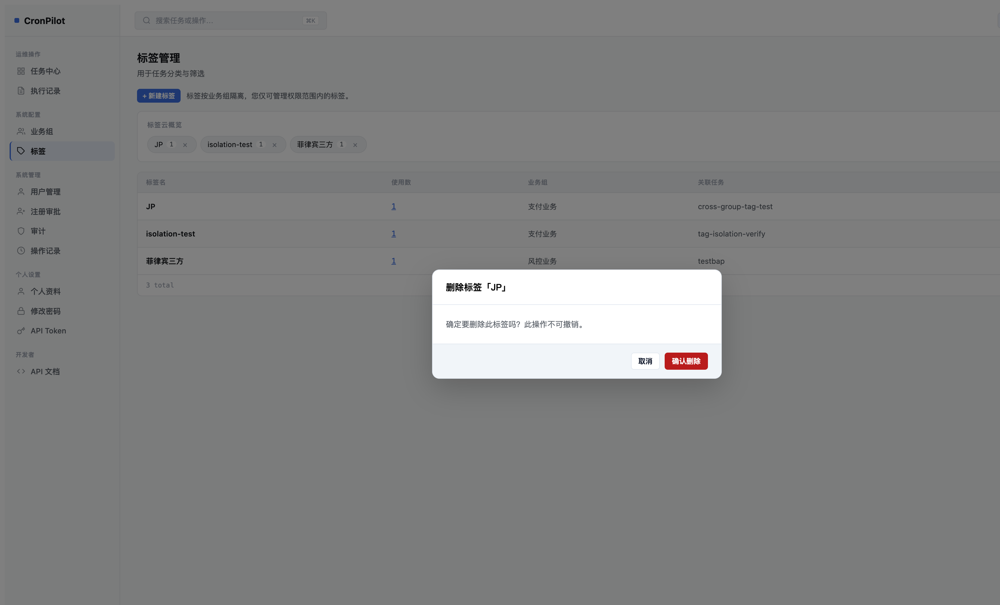
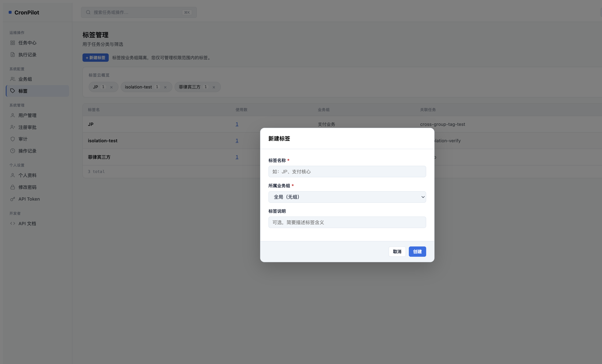
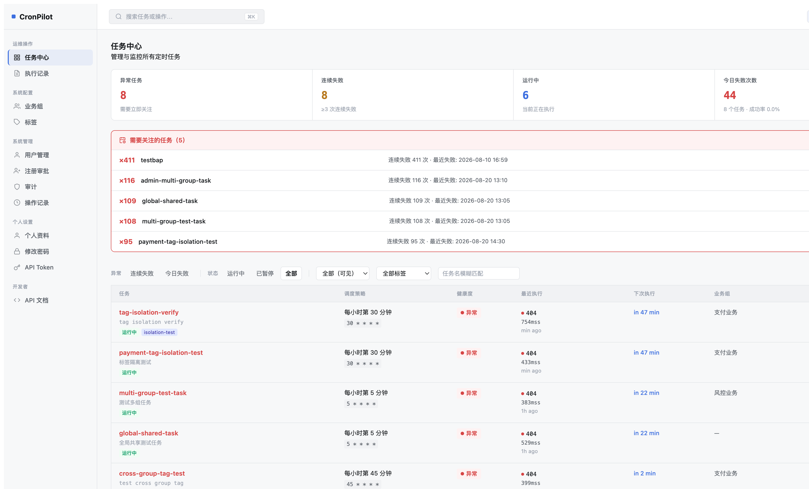
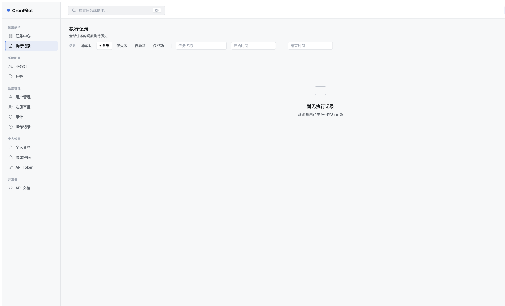
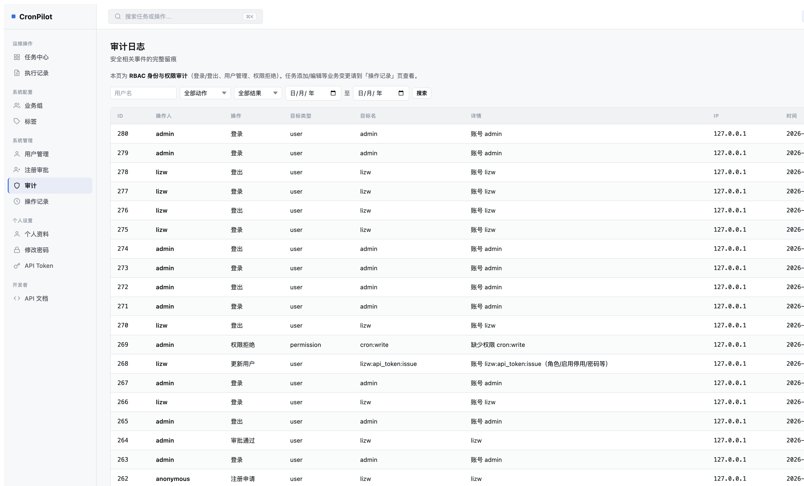
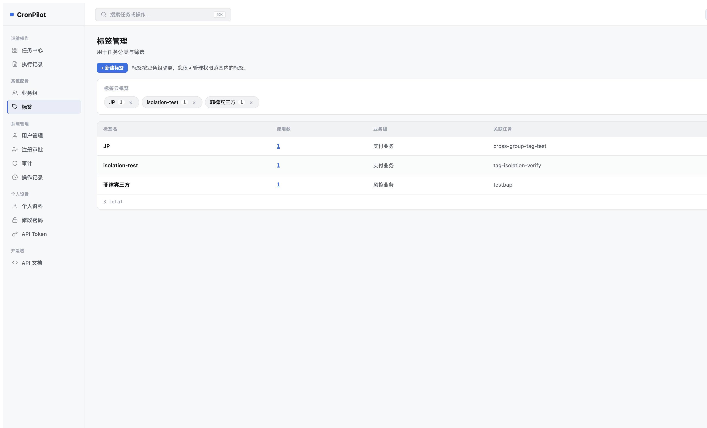
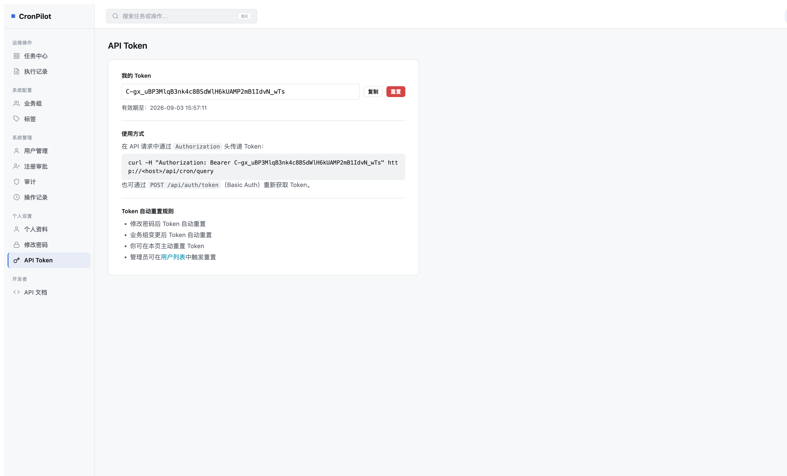

总览评分
第四轮全量扫描，基于 Z3 修复后的实际运行截图对比
整体符合度
75%
本轮已修复
Z3
高优先级偏差
2
中优先级偏差
1
低优先级 / 可接受
4+
| 页面 | 优先级 | 偏差描述 | 状态 |
|---|---|---|---|
| 标签管理 | 已修复 | Z3：Bootstrap modal 系统迁移到 cp-modal，4个对话框全部修复 | ✅ 本轮完成 |
| 操作记录 | 高 | Z1：有冗余 ID 列；内容列显示 verbose 信息而非简洁对象名 | ⏳ 待修复 |
| 审计日志 | 高 | Z2：有 3 个冗余列（ID/目标类型/详情）；缺少快速过滤 chips | ⏳ 待修复 |
| 用户管理 | 中 | 操作列：文字多按钮 vs mockup 单图标按钮；列数超出 mockup | ⚠️ 功能更丰富，可接受或缩减 |
| 任务中心 | 良好 | Exception Panel + 7列表格为增强特性，超出 mockup 但符合产品需求 | ✅ 可接受 |
| 业务组 | 良好 | 卡片布局符合 mockup，展示成员数 + 任务数 | ✅ 对齐 |
| 标签管理（页面结构） | 低 | Mockup 只有标签云，当前额外有管理表格（增强功能） | ✅ 可接受增强 |
| 个人资料 | 良好 | Y1 新增功能，mockup 无对应页面，实现符合 UX 规范 | ✅ 新增功能 |
✔ Z3 修复验证 — 标签管理对话框系统
修复前：4 个 Bootstrap modal 全部无法正常显示（透明遮罩/不可见内容）。修复后：全部迁移到 cp-modal 系统
修复范围：删除所有 Bootstrap modal HTML、移除 Bootstrap JS/CSS 引用、创建统一 CpModal() 工厂函数，覆盖：新建标签、重命名标签、查看关联任务、删除确认（普通+强制）
删除确认对话框（修复后）

新建标签对话框（修复后）

已修复
删除确认：CpConfirm.show() 正确渲染
标题「删除标签「JP」」、正文、取消/确认删除按钮均正常显示，深色按钮样式符合规范。支持 ESC 关闭。
已修复
新建标签：表单 modal 正确渲染
标签名称、所属业务组（下拉）、标签说明三个字段均正确显示。取消/创建按钮样式正确。
已修复
重命名标签：表单 modal 正确渲染
pre-filled 名称、只读组名显示、标签说明编辑均可用。
已修复
强制删除：带任务列表的二次确认
当标签有关联任务时，首次删除请求后展示任务列表的 CpModal（危险样式），用户确认后再次发起 force 删除。
已修复
Pill 内联 × 按钮：触发正确的删除流程
e.stopPropagation() 阻止 highlightTag，调用 confirmDelete() → CpConfirm.show()。
任务中心
Mockup: 4 stats + 4列表格 | 当前: 4 stats + Exception Panel + 7列表格
当前实现（截图）

Mockup 规格
Stats: 任务总数 | 运行中 | 今日失败 | 24h成功率
Table: 任务 | 调度策略 | 运行状态 | 操作（图标）
Filters: 搜索框 + 全部/运行中/异常/已下线 chips
当前实现超出 Mockup 但更优：
• Exception Panel 高亮连续失败任务（增强）
• 7列表格增加健康度/最近执行/下次执行/业务组
• 操作列有图标按钮
• stats 语义调整（异常任务/连续失败数）
✓ 良好
总体结构对齐，Enhancement 超出 Mockup
无需调整，当前 Exception Panel 和丰富列信息是更优的产品决策。
执行记录
Mockup: 5列（任务/触发时间/耗时/响应码/状态）+ 3个 filter chip
当前实现（截图）

Mockup 规格
Cols: 任务 | 触发时间 | 耗时 | 响应码 | 状态
Filters: 按任务名筛选 + 全部/失败/超时 chips
当前截图为空状态（无历史数据），过滤器结构比 Mockup 更完整：
• 非成功/全部/仅失败/仅异常/仅成功 5个状态
• 支持任务名 + 时间范围搜索
列结构需有数据时验证
低
暂无数据，无法对比列结构
过滤器更丰富（5状态 vs 3状态），搜索增加时间范围——均为增强特性，符合产品需求。
操作记录 — Z1（高优先级）
Mockup: 5列（操作人/操作/对象/时间/来源IP）| 当前: 6列（ID/用户/类型/内容[verbose]/IP/时间）
当前实现（截图）

Mockup 规格
Cols: 操作人 | 操作 | 对象 | 时间 | 来源IP
示例: 张伟 | 修改 | order-fulfillment-sync | 2026-08-11 14:20 | 10.2.31.4
当前问题：
1. 有 ID 列（Mockup 无）
2. 内容列显示完整变更详情（verbose），Mockup 只显示任务名
3. 列顺序与 Mockup 不同
高
Z1-A：冗余 ID 列
当前列：ID | 用户 | 类型 | 内容 | IP | 时间。Mockup 无 ID 列，删除即可。
高
Z1-B：内容列过于 verbose
当前"内容"列显示完整变更参数（如 "b4-browser-task · hour=*, minute=/5, req_url=https://httpbin.org/get"），Mockup 中"对象"列只显示任务名。建议：缩短为任务名（对象），完整内容可折叠/tooltip 展示。
Z1 修复方案：删除 ID 列；将"内容"列改为"对象"，只显示 task_name，完整 content 可 tooltip 或点击展开。
审计日志 — Z2（高优先级）
Mockup: 5列（事件/用户/时间/IP/结果）+ 3个 filter chip | 当前: 8列 + 无 chips
当前实现（截图）

Mockup 规格
Filters: 全部 | 登录失败 | 权限变更 ← chips 快速筛选
Cols: 事件 | 用户 | 时间 | IP | 结果
当前问题：
1. 有 ID 列（Mockup 无）
2. 有"目标类型"列（Mockup 无，信息冗余）
3. 有"详情"列（Mockup 无，显示 "账号 admin" 等，冗余）
4. 缺少快速过滤 chips（全部/登录失败/权限变更）
5. 列顺序与 Mockup 不符
高
Z2-A：3 个冗余列（ID / 目标类型 / 详情）
当前8列：ID | 操作人 | 操作 | 目标类型 | 目标名 | 详情 | IP | 时间。删减为：操作人 | 操作 | 目标名 | 时间 | IP | 结果。
高
Z2-B：缺少快速过滤 chips
Mockup 顶部有 3 个 chip：全部 / 登录失败 / 权限变更。当前只有下拉菜单过滤，缺少 chip 快速切换体验。
Z2 修复方案：① 删除 ID、目标类型、详情列；② 调整列顺序为 操作人|操作|目标名|时间|IP|结果；③ 在搜索栏上方添加 chip 快速过滤（全部/登录失败/权限变更）。
用户管理
Mockup: 5列（用户/角色/状态/最近登录/单图标操作）| 当前: 8列 + 多文字操作按钮
当前实现（截图）

Mockup 规格
Cols: 用户(avatar+name+email) | 角色 | 状态 | 最近登录 | 操作(单图标)
操作: 只有一个编辑图标按钮
当前状态（X1 已实现部分）：
✅ 有 avatar（首字母）
✅ 有 role badge
✅ 有状态列
❌ 操作列：4个文字链接 vs 单个图标（功能更多）
❌ 额外列：花名/岗位/密码/业务组/创建时间
⚠️ 功能取舍：多操作按钮是产品需求
中
操作列：多文字按钮 vs 单图标
Mockup 每行只有 1 个编辑图标。当前有 4 个操作（编辑/重置密码/重置Token/停用），这是产品需求的合理扩展。建议：可将多操作图标化为 3-4 个图标，或合并为图标 + 下拉菜单。
低
额外列（花名/岗位/密码/业务组/创建时间）
Mockup 中不包含这些列，但这是产品功能的合理增加（特别是业务组列）。可接受，或通过列控制/折叠处理。
业务组
Mockup: 卡片布局 | 当前: 卡片布局 ✅
当前实现（截图）

状态评估
对齐度：高
• 卡片网格布局 ✅
• 显示业务组名称 + 描述 ✅
• 显示成员数 + 任务数 ✅（Mockup 未指定但合理增强）
• 新建业务组按钮 ✅
• 卡片网格布局 ✅
• 显示业务组名称 + 描述 ✅
• 显示成员数 + 任务数 ✅（Mockup 未指定但合理增强）
• 新建业务组按钮 ✅
✓ 良好
业务组页面与 Mockup 高度对齐
无需调整。
标签管理
Mockup: 只有标签云（tag-lg pill + × 删除）| 当前: 标签云 + 管理表格 + 全功能对话框（已修复）
当前实现（截图）

Mockup 规格
仅标签云：
tag-lg + 数量 badge + × 删除按钮
+ 新建标签 搜索框样式按钮
当前额外有：管理表格（标签名/使用数/业务组/关联任务/操作）
管理表格是合理的产品增强（支持重命名/删除/查看关联任务）。
Z3 对话框修复后功能完整。
已修复
Z3：4个 Bootstrap modal 全部迁移到 cp-modal 系统
新建/重命名/查看任务/删除（含强制删除）均通过 CpModal() 正确显示。
低
管理表格为额外功能（可接受）
Mockup 未包含，但对管理员有必要。无需调整。
其他页面（Mockup 外新增功能）
以下页面在 Mockup 中未定义，为产品新增功能
API Token 页

重置按钮使用 CpConfirm 正常工作 ✅
个人资料页（Y1）

只读字段置灰、可编辑字段正常 ✅
行动计划（按优先级）
剩余偏差的修复计划
| 编号 | 优先级 | 页面 | 修复内容 | 复杂度 |
|---|---|---|---|---|
| Z1 | 高 | 操作记录 | 删除 ID 列；将"内容"列改为"对象"只显示 task_name；完整内容可 tooltip | 简单 |
| Z2 | 高 | 审计日志 | 删除 ID/目标类型/详情 列；调整列顺序；添加 chip 快速过滤 | 中等 |
| X3 | 中 | 用户管理 | 操作列图标化（3-4 个 icon button 替代文字链接） | 中等 |